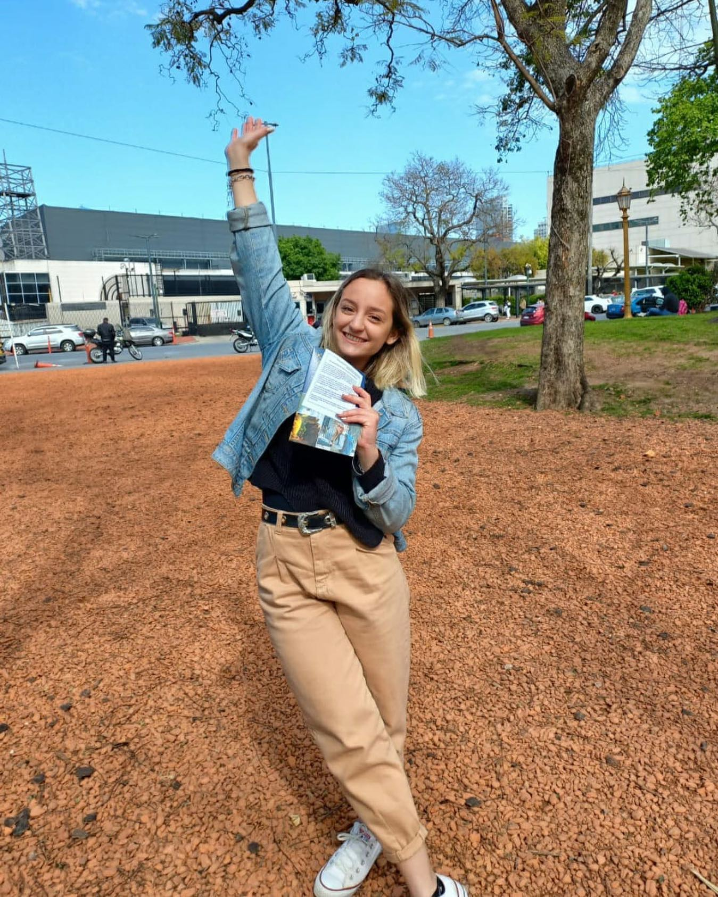

Rocio, Mendoza, 19 años
"Conocí gente maravillosa que hizo a mi experiencia extra especial"
Go somewhere

De acuerdo con los requisitos de visa del Departamento de Estado, cada aspirante a au pair debe quedarse por lo menos 12 meses con su familia anfitriona. Esta regla no aplica sólo para las au pairs de Au Pair Argentina, sino también para las de todas las demás agencias.
Sí. Además de comprometerte a ser au pair en Estados Unidos durante un período mínimo de 12 meses, también tenés la opción de prolongar tu estadía 6, 9 o 12 meses más. ¡Más del 40% de nuestras au pairs eligen aprovechar esta oportunidad!
¡Los hombres son bienvenidos en el programa Au Pair de Cultural Care! Sin embargo, hay que tener en cuenta que la búsqueda de una familia anfitriona puede llevarles, a los aplicantes varones, un poco más de tiempo. Por eso deberás tener una mente especialmente abierta y estar motivado, además de tener mucha experiencia en el cuidado de niños y conducción. Como con cualquier au pair, cuanta más experiencia tengas cuidando chicos, más y mejores oportunidades de ubicación tendrás.
Si ya encontraste una familia anfitriona, ponete en contacto con nosotros hoy para que los encargados de nuestra oficina puedan inscribir a tu familia en el programa y asegurarte que podrás obtener la visa J-1 oficial. Dado que nos dedicamos a promover tu éxito en el programa, tu familia anfitriona será cuidadosamente monitoreada por nosotros y tendremos que seguir nuestro procedimiento de revisión habitual, incluyendo el chequeo de sus antecedentes penales.
“Au pair” es un término francés que significa se “a la par” o “igual a”, es decir que la au pair vive en igualdad de condiciones respecto de su familia anfitriona. Las au pairs son originarias de otros países, y tanto a ellas como a sus familias anfitrionas les interesa aprender sobre las costumbres y el estilo de vida a través del intercambio cultural. Una Au Pair necesita tener experiencia con el cuidado de niños, pero no necesariamente títulos o experiencia formal en su cuidado. En Estados Unidos, el programa au pair es un programa de visas regulado que restringe la edad de las au pairs entre los 18 y los 26 años y tiene reglas específicas en cuanto a las responsabilidades, las horas de trabajo y la remuneración. En cambio, una niñera ha estudiado para cuidar chicos y obtenido certificados en la materia. Una niñera no siempre vive con la familia y a menudo hace más tareas domésticas que las permitidas a una au pair.
Todos los au pairs en los Estados Unidos reciben un salario semanal directamente de su familia anfitriona. El salario está sujeto al impuesto sobre la renta y deberá pagar impuestos por su tiempo en los EE. UU. Las regulaciones del Departamento de Estado de los EE. UU. Establecen la cantidad mínima que las familias anfitrionas deben proporcionar a los au pairs, que actualmente se calcula en al menos $ 195.75 por semana. Las familias anfitrionas y los au pairs son libres de discutir y aceptar una compensación superior al salario mínimo requerido de $ 195.75; sin embargo, esto no puede ser a cambio de que el au pair exceda los límites reglamentarios en las horas de trabajo (10 horas por día; 45 horas por semana) o que realice tareas más allá de las tareas relacionadas con el cuidado infantil.
Nuestra prioridad número uno es que tanto vos como tu familia anfitriona tengan una gran experiencia. Para eso deberías darte un tiempo y conocerlos. A veces surgen conflictos de personalidad entre una au pair y su familia anfitriona. En estos casos, Au Pair Argentina hará todo lo posible para encontrar la mejor solución para todos.
Hay muchas oportunidades de hacer nuevos amigos durante tu experiencia au pair. Acá tenés algunas: 1- En nuestra escuela de entrenamiento,compartirás clases con au pairs de todo el mundo que viajarán a Estados Unidos Al mismo tiempo que tú. 2- En reuniones ocasionales en la zona. Tu Consultora Local te pondrá en contacto con otros au pairs que vivan cerca. 3- Conocerás a otros au pairs durante las llamadas mensuales grupales o de apoyo dirigidas por nuestro equipo de Cultural Care en los Estados Unidos. 4- En las clases que tomes en un instituto o universidad local. Ahí podés contactarte con otros estudiantes estadounidenses y de otros países. 5- A través de tu familia anfitriona y las comunidades de las que forman parte.
Como parte de las reglas del programa au pair establecido por el Departamento de Estado de Estados Unidos, todas las au pairs deben inscribirse en un programa de estudios post-secundario el año que viven en Estados Unidos. Es una gran forma de conocer gente de tu misma edad, mientras estudiás algo que puede ser útil para tu vida futura o tu carrera. Ex au pairs de Cultural Care estudiaron desde informática hasta cultura estadounidense, y desde idiomas hasta cursos relacionados con el cuidado de los chicos. Tené en cuenta que tus estudios deben ajustarse a tu horario de cuidado de los chicos que te entregaremos con anticipación y en colaboración con tus papás anfitriones.